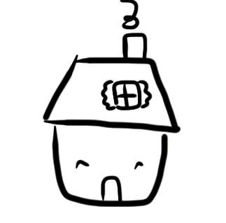

Cook Nooks!

A simple and user-friendly option to store a personal recipe log (to share, or not to share!) for chefs and foodies in their own little nook of the web instead of an old Google Doc. Cook-Nooks can be accessed directly via its URL and its super-simple recipe posting makes it easier on smartphones.